Роллы · 280 г
Филадельфия
Нежный лосось, сливочный сыр, огурец, рис, нори.
4 500 ₸
Выберите формат и составьте сет из каталога. Выбор блюда и отображаемая сумма — предварительные; сервер повторно проверит активность и цену.
Выберите от 5 до 8 разных позиций. Общее количество не выше 12 порций.
Нежный лосось, сливочный сыр, огурец, рис, нори.

Классические нигири с лососем.

Японский чай матча на кокосовом молоке.

Говяжий бульон, лапша, говядина и яйцо адзитама.
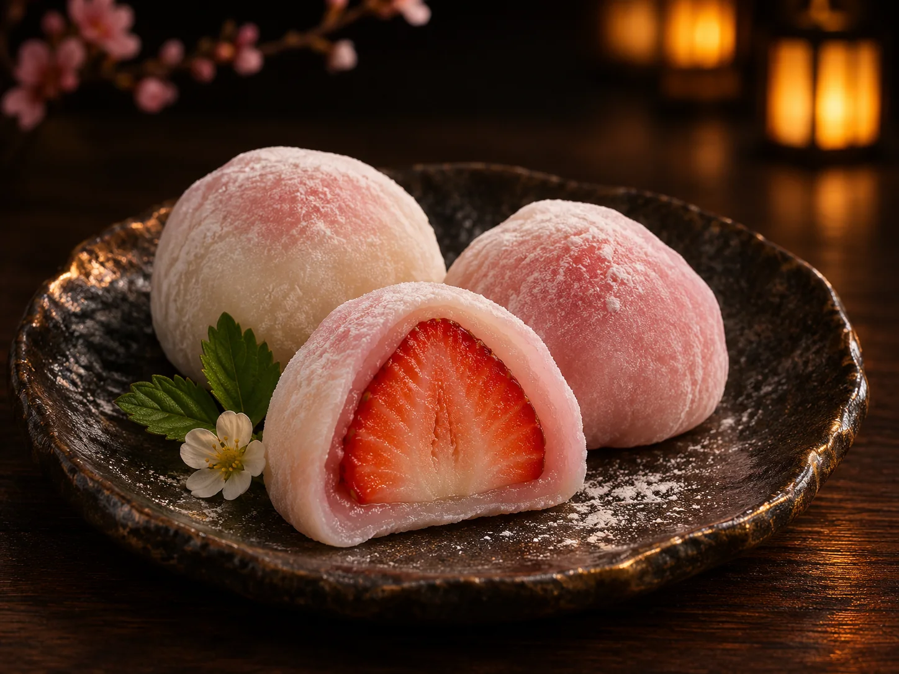
Рисовое тесто с ягодной начинкой.
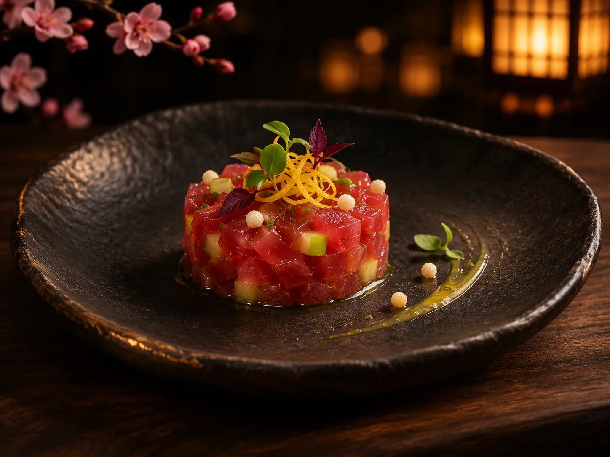
Тунец ахи, понзу с юдзу, зелёное яблоко и хрустящий рис — прохладная закуска с чистым цитрусовым финалом.
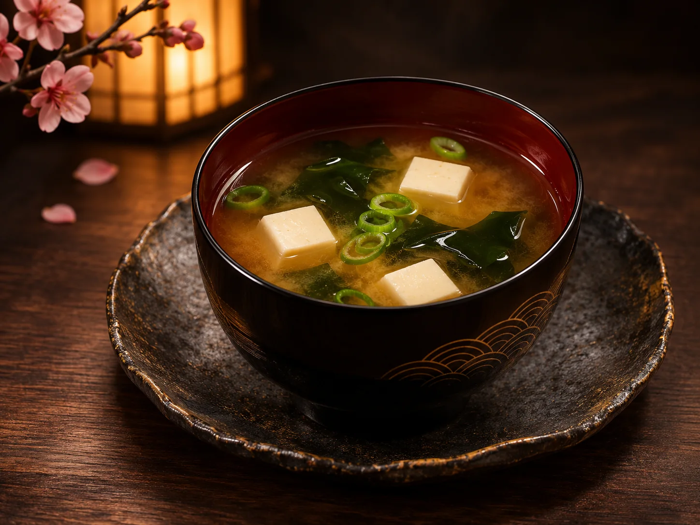
Светлый бульон даси, паста сира-мисо, тофу, вакаме и зелёный лук.

Снежный краб, авокадо, огурец, икра тобико, рис.
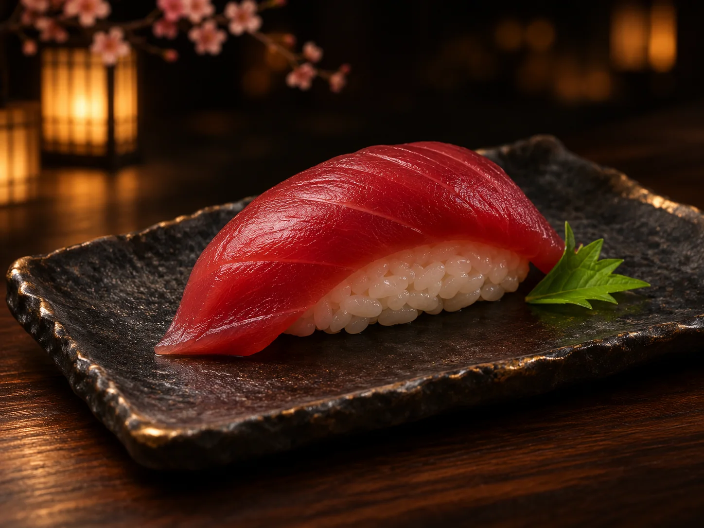
Нигири с тунцом.
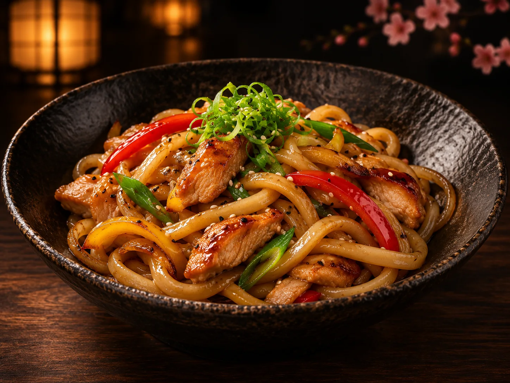
Пшеничная лапша удон, курица и овощи в соусе терияки.
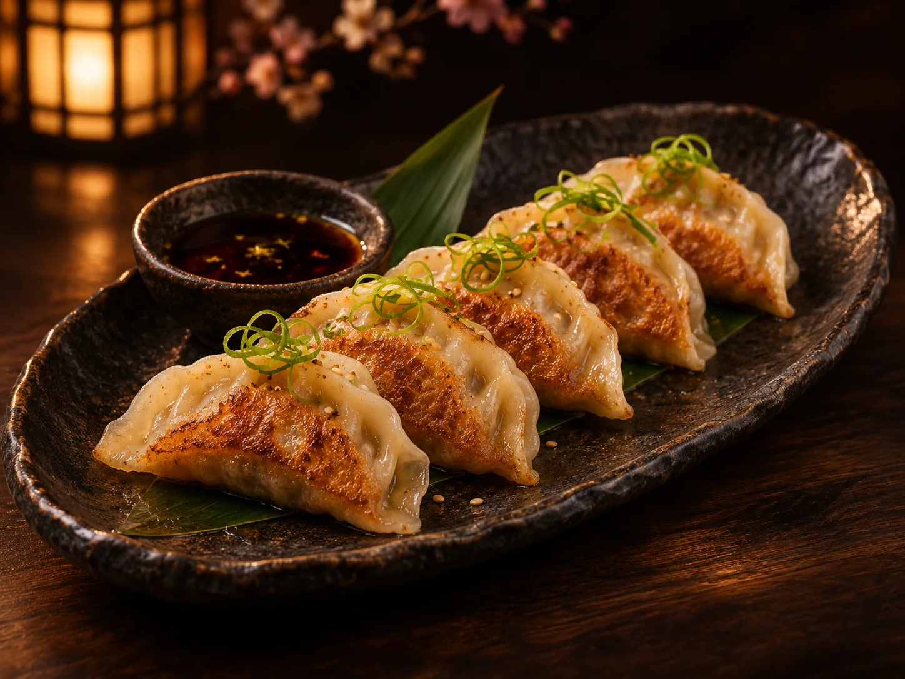
Тонкое тесто, томлёная утка, имбирь и кунжутное масло. Подаём с соусом понзу собственного состава.

Крем маскарпоне, савоярди с ходзича и пудра из церемониальной матчи.
Домашняя цитрусовая основа юдзу, содовая и тонкая нота свежего имбиря.
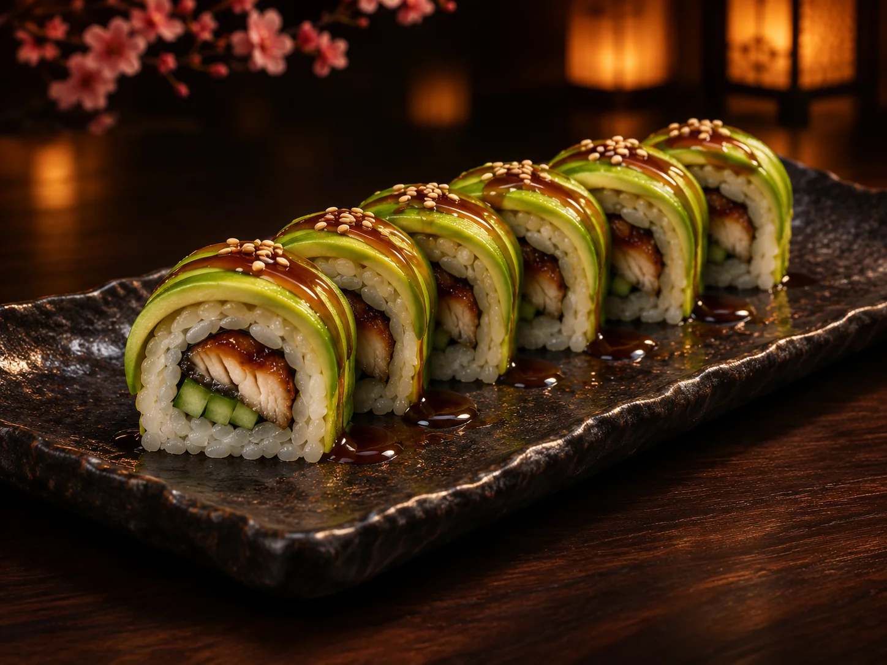
Копчёный угорь, авокадо, сливочный сыр, соус унаги, кунжут.
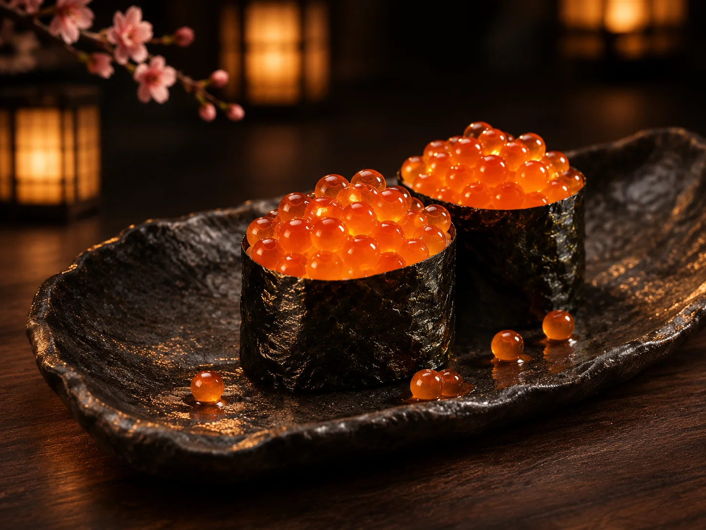
Рис и нори, наполненные икрой лосося.
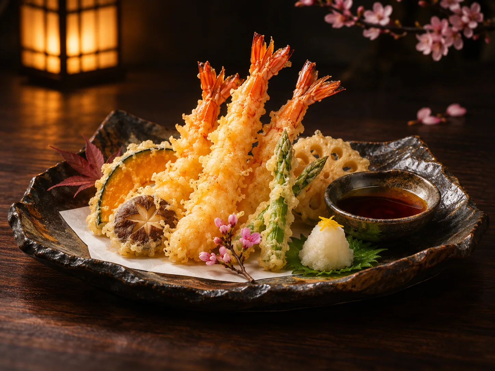
Тигровые креветки в лёгком тесте, сезонные овощи и тэнцую с дайконом.
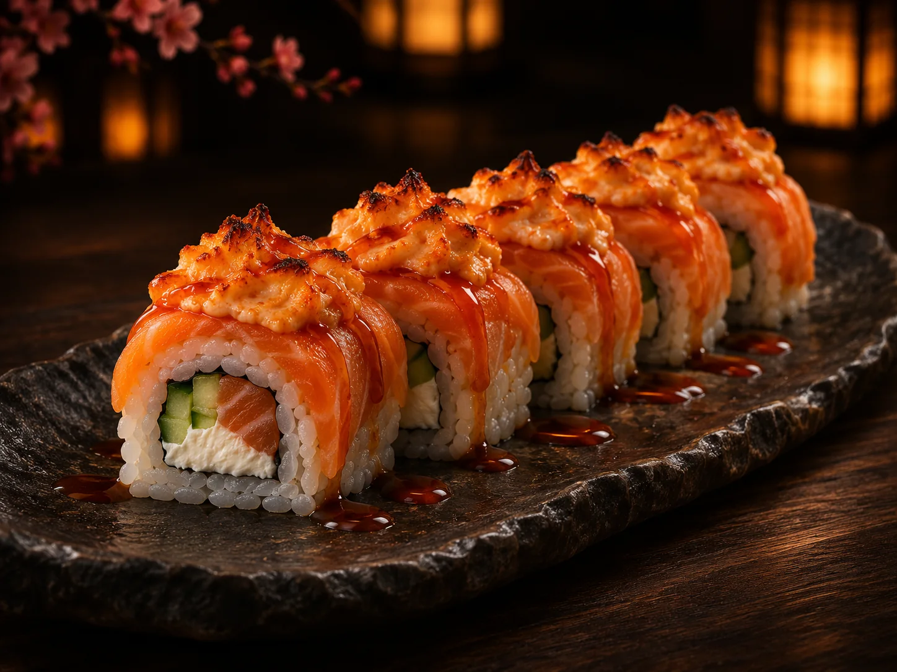
Лосось, огурец и сливочный сыр под шапкой из соуса спайси.
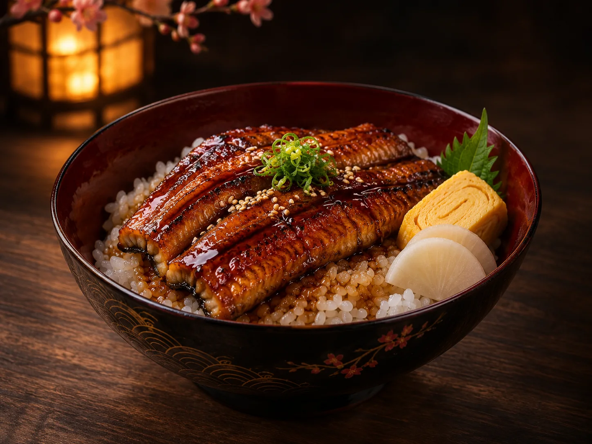
Рис косихикари, угорь с глазурью кабаяки, тамаго и маринованный дайкон.
Выберите формат и добавьте разные блюда. Цены будут перепроверены сервером.